솔국지 현황 보고 — 2026-11-06
다른 모델 · 다른 작업자에게 넘기는 문서. 게임 전체 흐름 · 카드 · 편성 · 전투 구조는 docs/현황_1105.html 에 자세히 있고, 이 문서는 그 위에 오늘 바뀐 것(타입2 탑뷰 전장 개편)과 지금의 약점을 정리한다. 커밋 079f821 (main) · APK build/solgukji.apk (디버그 서명, 142MB).
1. 한눈에
솔국지는 Godot 4.4.1 세로 화면 삼국지 오토배틀러다. 하루 3페이즈(오전 · 오후 · 저녁)마다 카드를 모으고(징집 · 조합 · 보급) 3×3 진형에 편성한 뒤, 전투는 자동으로 진행되고 플레이어는 관전한다. 판정은 결정적 엔진(battle.gd + rt_battle.gd)이 끝까지 계산하고, 화면(battle_view.gd)은 그 결과를 재생만 한다.
전투 화면은 세 가지 화풍 중 하나: 기본 3D(GPU 병사 ~5,000명, 삼국지13 느낌) · 수묵 · 타입2(삼국지11 식 탑뷰 지도). 오늘은 타입2 를 주 화면 후보로 키웠다.
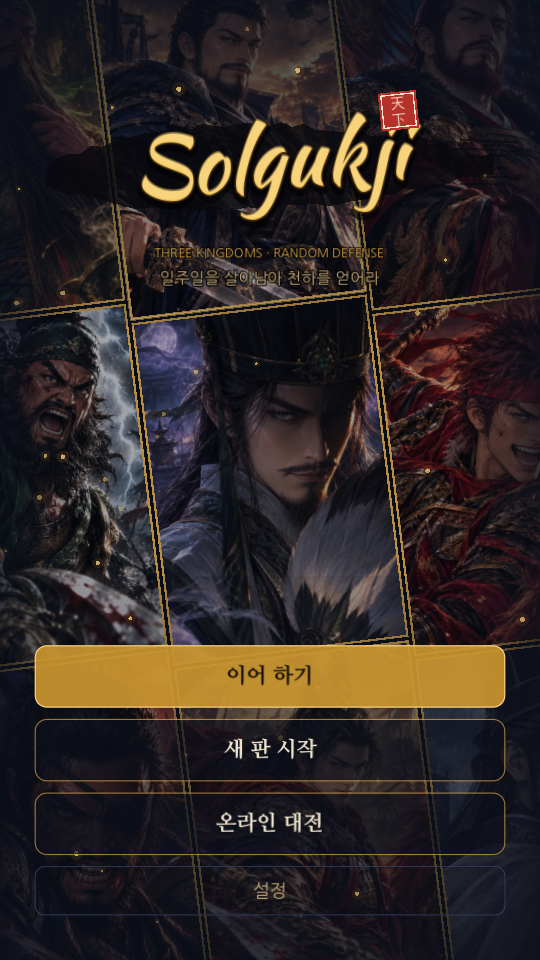
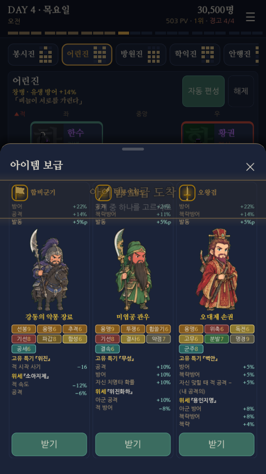
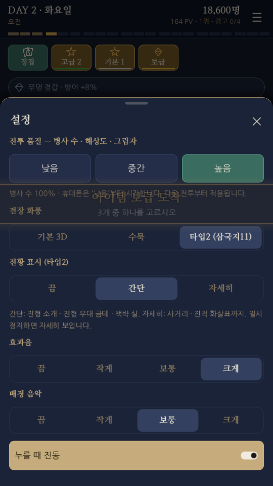
2. 오늘의 핵심 —— 타입2(탑뷰) 전장
왜 탑뷰인가
- 세로 휴대폰 화면에서 전황이 한눈에 읽힌다 (3D 는 피아식별 · 책략계 존재감이 약점이었다).
- 3D 렌더를 끄므로 휴대폰 발열 · 프레임에 유리하다.
- 이 게임의 핵심인 편성 · 진형을 전투에서 그대로 보여 줄 수 있다.
사용자 피드백 흐름: "가시성" 요청 → 깃발 제거 · 넓게 · 정보 표시 추가 → "보는 맛이 다 사라졌다" → 카메라 연출 · 타격감 복구 + 정보 표시를 단계 설정으로. 즉 읽기 쉬움과 보는 재미의 균형이 지금 타입2 의 핵심 과제다.
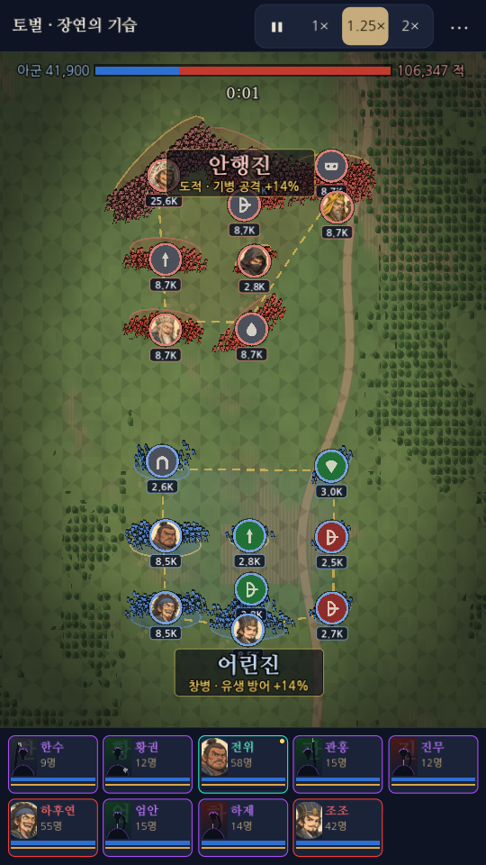
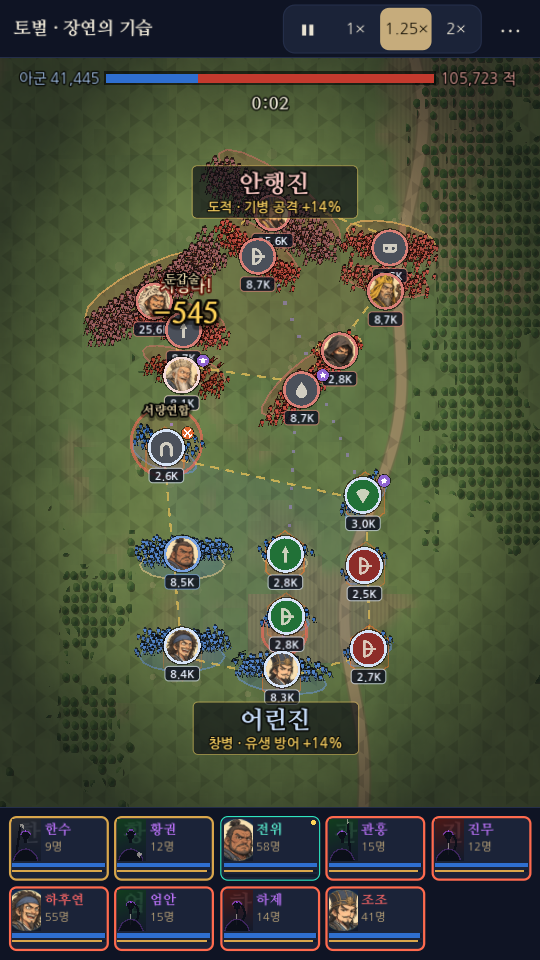
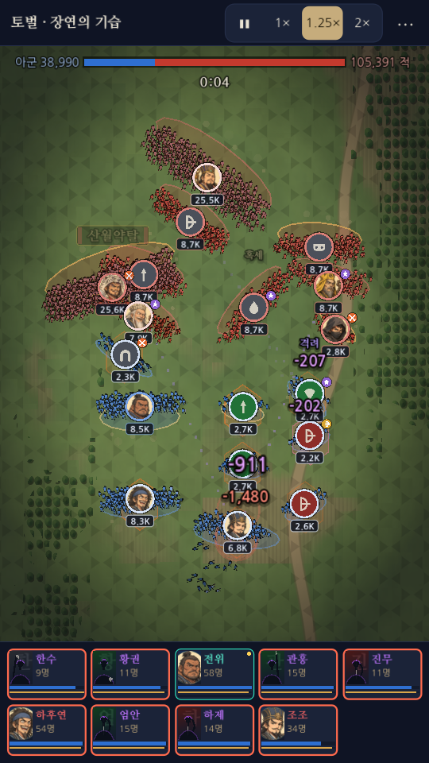
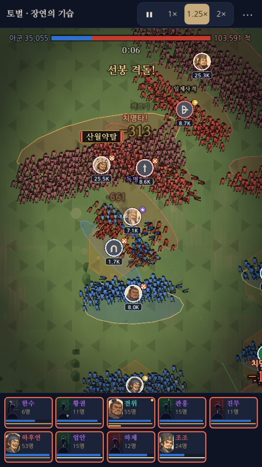
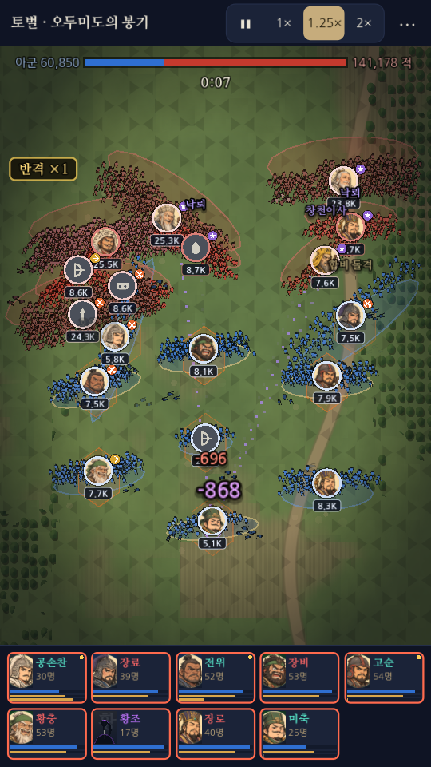
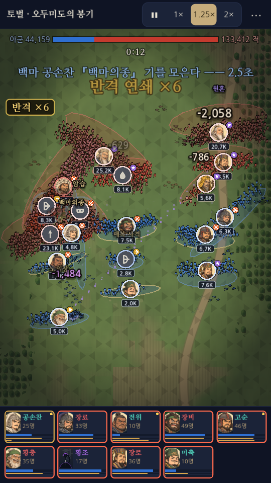
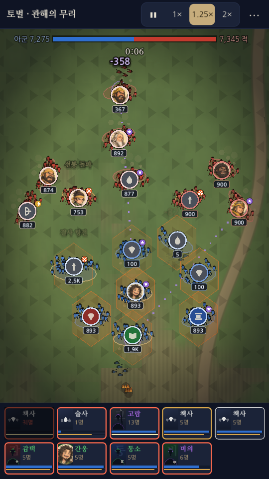
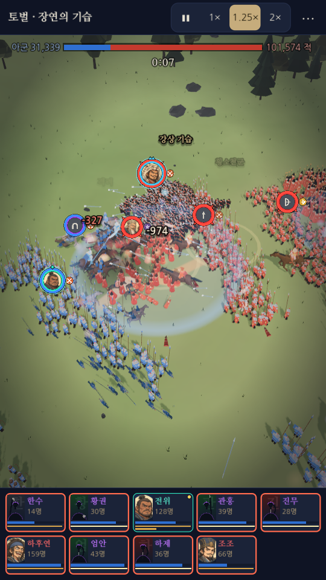
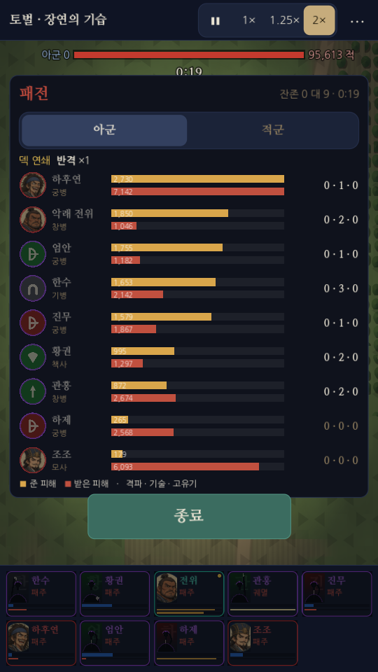
타입2 구조 (그리기만 바꾼다 —— 판정 · 결정성 무관)
| 층 (아래 → 위) | 무엇 | 코드 |
|---|---|---|
| 바닥 | 셰이더 지도: 풀빛 얼룩 · 흙밭(고랑) · 굽은 흙길 · 양옆 숲 · 옅은 육각 격자 · 가장자리 어둡게. CPU 부담 없음 | shaders/type2_ground.gdshader |
| Under | 부대 바닥 타원 · 우대 금테 · 전선 흙먼지 · 이동 흙먼지 · 진형 윤곽 · 사거리 부채꼴 · 책략 실 · 진격 화살표 · 상태 칸(화상 · 수몰 · 혼란) · 기술 범위 | Type2View._draw_under, _draw_tac_under |
| 병사 | MultiMesh 2D 인형. 계산 병사 1명 = 인형 3개(작은 부대 5개). 버퍼 한 번에 넘김, 부대 단위 정렬 | Type2View._draw_dots |
| FxLayer | 2D 연출: 고리 · 튀는 획 · 번개 · 땅에 붙은 불 · 안개 · 검기 · 투사체 · 소용돌이 · 흙먼지 · 회복 십자 | Type2View.fx / fx_minor / fx_ult / _draw_fx |
| HUD | 초상 메달(서로 밀어내기) · 피해 숫자(겹치면 위로) · 기술명 · 컷인 (3D 와 공용) | battle_view.gd Hud _token, _draw_number |
| LabelLayer | 진형 이름 · 우대 효과 (시작 4초만, HUD 위) | _draw_tac_top |
왜 CPU 병사인가: 3D 의 GPU 병사는 셰이더가 공식으로 위치를 계산해 게임 코드가 병사 위치를 모른다. 타입2 는 병사마다 위치 · 생사 · 피격 시각이 필요해 CPU 병사(Squad.soldiers)를 쓴다(그림은 GPU 인스턴싱). 그래서 계산 병사 수는 3D 의 1/3(Squad.CPU_SHARE 0.33)이고, 보이는 수는 복제로 늘렸다. 3D ↔ 2D 화풍 전환은 다음 전투부터 적용된다.
3D 연출 우회: 타입2 면 War3D.minor_fx · UltFx.play · fire_patch 가 2D 연출로 넘긴다(3D 입자는 보이지 않고 부하만 냈다). 병사 날리기(launch)는 그대로.
카메라 연출 (Type2View.focus / shake / _feel_step): 첫 격돌(1.7배 · 1.8초) · 고유기(시전자 1.9배 → 맞는 쪽) · 초월 이상 장수 격파. 고유기 외에는 한 번 다가간 뒤 3.5초 쉰다.
3. 오늘 바뀐 것 전체
| 영역 | 변경 |
|---|---|
| 성능 · 휴대폰 | 디버그 APK 에서 품질 '낮음'이 먹지 않던 버그 수정 (Settings.FULL_COUNT_DEBUG 가 휴대폰 디버그에도 병사 100% 를 강제했다) —— 사용자가 겪은 후반 프레임 드랍의 원인 |
| 타입2 화면 | 셰이더 지도 · 부대 바닥 · 깃발 제거 · 세로 1.25배로 넓게(TILT) · 메달 겹침 순서 · 범위 원 크기 버그(점묘 배율로 1.7배 크게 그려짐) 수정 |
| 타입2 연출 | 2D 고유기 · 잔기술 · 화계 연출, 화면 섬광 22% · 피격 흰빛 약하게(번쩍임 대책), 카메라 다가가기 · 흔들림, 부딪침 먼지 · 불티, 맞으면 움찔 · 밀려 쓰러짐, 인형 15 → 17 |
| 전황 표시 | 진형 소개 · 우대 금테 · 책략 실 · 사거리 부채꼴 · 진격 화살표 · 설정 Settings.tac_info (0 끔 · 1 간단(기본) · 2 자세히, 일시정지면 자세히) |
| HUD 공용 | 피해 숫자 합치기를 처음 뜬 뒤 1.6초까지만 (계속 맞는 부대 위 숫자가 안 사라지고 커지기만 했다) · 격파 메달 얼굴도 흐려지게(Art.draw_face_circle 에 투명도) · 메달 상자 객체 재사용 |
| 알림 | 전투 화면이 열리면 중앙 알림 띠(보급 도착 등)를 감추고, 남은 띠는 전투 뒤에 |
| 전투 실험실 | tests/battle_lab.gd 가 게임 설정을 읽고, 가운데 열에서 화풍 · 품질을 고른다 (사용자: 실험실에서 전투 설정을 못 바꾼다) |
| 깃 동기화 | 다른 PC 의 커밋 18개를 받아 왔다 (책사계 강화 · 잔기술 인물별 55종 · 일반 기술 약하게 · 자주 · 신화 11명 · 기본 1.25배속 · 명단 정리 · 보급 조정 · 전투 실험실 · 플레이 기록 등) |
4. 지표
| 항목 | 값 | 비고 |
|---|---|---|
| 결정성 | 30판 실패 0 | tests/determinism.tscn |
| 타입2 후반 fps (PC, 계산 병사 1,219) | 86(오늘 시작) → 68(연출 추가 후) → 94 | 같은 전투 기본 3D: 105 (병사 3,692) |
| 타입2 프레임당 비용 | HUD 메달 ~2.0ms · 병사 1.3ms · Under 1.1ms · 부대 갱신 1.3ms | --gfps=초 가 구간별 ms 를 찍는다 |
| 자동 플레이 20판 | 우승 0 · 평균 도달 8.2 페이즈 | 어제 1 · 13.3. 오늘 받은 커밋 18개의 밸런스 변경 영향으로 보임 (화면 작업은 판정 무관) |
5. 약점 · 같이 고민할 것
build/ 무시) · 디버그 서명만. GitHub 릴리스 업로드는 gh 설치 완료, 로그인 대기.6. 코드 지도 · 점검 방법
| 파일 | 역할 |
|---|---|
scripts/field/type2_view.gd | 타입2 전장 전부 (지도 맞춤 · 병사 · 바닥 · 2D 연출 · 전황 표시 · 카메라 연출) |
scripts/field/dot_view.gd | 2D 전장 바탕 클래스 (점묘). 범위 원 _draw_areas(ci) |
shaders/type2_ground.gdshader | 타입2 바닥 지도 |
scripts/battle_view.gd | 전투 재생 · HUD (메달 · 숫자 · 컷인 · 섬광) |
scripts/war3d/war3d.gd, ult_fx.gd | 3D 전장 · 연출. 타입2 면 2D 로 넘기는 분기 |
scripts/game/settings.gd | 품질 · 화풍 · tac_info |
tests/battle_lab.gd | 전투 실험실 (tools/전투실험실.bat) |
스크린샷: godot --path solgukji_godot --resolution 540x960 -- --gnew=시드 --gplay=페이즈 --gbattle=quest --gtype2=1 --gshot=파일.png --after=초 --frames=N --every=초
성능: ... --gbattle=quest --gtype2=1 --gfps=12 (평균 fps · 가장 느린 프레임 · 구간별 ms)
결정성: godot --headless --path solgukji_godot res://tests/determinism.tscn · 자동 플레이: res://tests/game.tscn
APK: godot --headless --path solgukji_godot --export-debug "Android" ../build/solgukji.apk (릴리스 키 없음)
새 class_name 이 든 커밋을 받은 뒤엔 --headless --import 를 한 번 돌려야 스크립트가 컴파일된다 (오늘 PlayLog 미선언 오류).